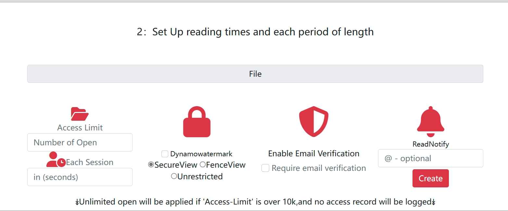
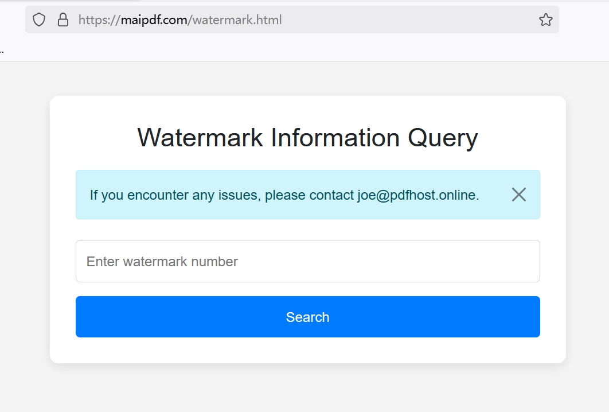

How to Catch PDF Readers Red-Handed
🎯 The Ultimate Detection Mission
Want to know exactly who's reading your PDFs, when they're doing it, and what they're doing with the information? This comprehensive guide will teach you professional techniques to catch PDF readers in the act and gather irrefutable evidence of their activities.
🕵️ Why You Need to Catch Readers
Critical Detection Scenarios
- Corporate Espionage Detection - Identify competitors accessing your confidential documents
- Leak Investigation - Trace the source of information breaches
- Client Engagement Analysis - Understand prospect interest levels
- Internal Security Auditing - Monitor employee access to sensitive materials
- Partnership Due Diligence - Verify partner engagement with shared documents
🔍 Professional Detection Methods
🎭 The Invisible Trap
Set up completely invisible tracking that catches readers without them knowing they've been detected.
Implementation Steps:
- Upload Target Document: Add your PDF to a professional tracking platform
- Configure Stealth Mode: Enable maximum invisibility settings
- Generate Trap Link: Create a link that appears completely normal
- Deploy Strategically: Share the link through suspected channels
- Monitor Silently: Watch for access attempts in real-time

🔗 The Honey Pot Link
Create irresistible "bait" documents that attract suspicious readers and capture their information.
Honey Pot Strategy:
- Compelling Content: Create documents that targets can't resist opening
- Strategic Placement: Position links where suspects are likely to find them
- Multiple Versions: Use different versions to identify specific leak sources
- Escalating Value: Make content seem increasingly valuable to encourage sharing
🧬 DNA Fingerprinting
Create unique document "DNA" for each potential reader to identify exactly who accessed what.
DNA Implementation:
- Unique Identifiers: Embed invisible codes specific to each recipient
- Watermark Variations: Subtle differences that identify individual copies
- Metadata Tracking: Hidden information that traces back to source
- Behavioral Signatures: Track unique reading patterns per user
📊 What You'll Catch Them Doing
🔍 Evidence You Can Collect
- Identity Information: IP addresses, geographic locations, device details
- Access Patterns: When they read, how often, and for how long
- Behavioral Analysis: Which sections they focus on most
- Sharing Activity: If and how they distribute your documents
- Network Analysis: Corporate vs. personal access patterns
- Device Fingerprints: Unique hardware and software signatures
🎯 Advanced Detection Capabilities
- Real-time Alerts: Instant notifications when documents are accessed
- Geographic Tracking: Precise location data of readers
- Time-based Analysis: Peak reading hours and frequency patterns
- Referrer Detection: How readers found your documents
- Download Attempts: Track save and print activities
🎯 Setting Up Your Detection Operation
🛠️ Professional Setup Process
Follow this systematic approach to create an undetectable monitoring operation:
Phase 1: Platform Configuration
- Choose Detection Platform: Select a service with advanced tracking capabilities
- Configure Stealth Settings: Enable maximum invisibility options
- Set Up Alerts: Configure real-time notifications
- Test Detection: Verify tracking works without visible indicators
Phase 2: Document Preparation
- Content Strategy: Create compelling documents that encourage access
- Version Control: Generate unique versions for different targets
- Metadata Embedding: Add invisible tracking elements
- Quality Assurance: Ensure documents appear completely normal
🚨 Real-World Detection Success Stories
🎯 Case Study: The Corporate Spy
Situation: A tech company suspected a competitor was accessing their confidential product roadmaps.
Detection Strategy:
- Created a fake "leaked" product roadmap with tracking
- Strategically placed the document where the spy might find it
- Used DNA fingerprinting to identify the specific access source
Results Caught Red-Handed:
- IP Address: Traced to competitor's office building
- Access Pattern: Multiple views during business hours
- Device Info: Corporate laptop with company-specific software
- Sharing Evidence: Document forwarded to competitor's strategy team
Outcome: Legal action taken with solid evidence of corporate espionage.
🔍 Case Study: The Inside Leak
Situation: Confidential merger documents were appearing in competitor intelligence reports.
Detection Operation:
- Created unique versions of sensitive documents for each department
- Embedded invisible tracking and unique identifiers
- Monitored access patterns and external sharing
Caught in the Act:
- Internal Access: Documents accessed from finance department
- External Sharing: Forwarded to personal email account
- Time Correlation: Access times matched with competitor report releases
- Device Tracking: Accessed from employee's work laptop
Resolution: Employee terminated and legal proceedings initiated.
📈 Advanced Detection Analytics
🧠 Behavioral Pattern Analysis
Professional detection systems can identify suspicious behavior patterns:
- Unusual Access Times: Reading at odd hours suggests ulterior motives
- Rapid Scanning: Quick page flipping indicates information harvesting
- Multiple Device Access: Same document opened on various devices
- Geographic Anomalies: Access from unexpected locations
- Sharing Velocity: How quickly documents are forwarded
🔬 Forensic Evidence Collection
Build a comprehensive evidence file for each detected reader:
- Access Logs: Complete timeline of document interactions
- Network Forensics: IP address history and routing information
- Device Fingerprints: Unique hardware and software signatures
- Behavioral Profiles: Reading patterns and interaction analysis
- Chain of Custody: Documented evidence trail for legal proceedings
🛡️ Counter-Detection Awareness
🔒 Protecting Your Detection Operation
- Operational Security: Keep detection activities confidential
- Multiple Channels: Use various distribution methods to avoid patterns
- Decoy Documents: Mix tracked documents with legitimate ones
- Time Delays: Don't act immediately on detection to avoid suspicion
- Evidence Preservation: Secure all collected data properly
⚠️ What Sophisticated Readers Might Do
- Use VPNs or proxy servers to hide their identity
- Access documents from public networks
- Use virtual machines or sandboxed environments
- Employ anti-tracking browser extensions
- Access documents through intermediaries
⚖️ Legal and Ethical Considerations
🚨 Legal Compliance Requirements
- Legitimate Interest: Ensure you have valid reasons for detection
- Proportionality: Detection methods should match the threat level
- Data Protection: Secure all collected surveillance data
- Disclosure Requirements: Some jurisdictions require privacy notices
- Evidence Admissibility: Ensure collection methods are legally sound
✅ Ethical Detection Practices
- Use detection only for legitimate security purposes
- Minimize data collection to what's necessary
- Protect the privacy of legitimate readers
- Establish clear policies for evidence use
- Regular review of detection practices
🚀 Next-Level Detection Techniques
🔮 Future Detection Technologies
- AI Behavioral Analysis: Machine learning to identify suspicious patterns
- Biometric Integration: Eye tracking and reading behavior analysis
- Blockchain Evidence: Immutable proof of document access
- Cross-Platform Tracking: Following readers across multiple devices
- Predictive Detection: Anticipating who might access documents

🎯 Master the Art of Detection
Catching PDF readers red-handed requires a combination of technical expertise, strategic thinking, and careful execution. With the techniques outlined in this guide, you can build a comprehensive detection system that identifies unauthorized access, gathers solid evidence, and protects your valuable information.
Remember: Great detection power comes with great responsibility. Always use these capabilities ethically and within the bounds of applicable laws.